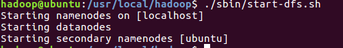
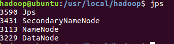

准备
创建Hadoop用户
- 创建新用户
sudo useradd –m hadoop –s /bin/bash
- 设置密码
sudo passwd hadoop
- 增加管理员权限
sudo adduser hadoop sudo
- 最后，切换到该用户进行登录
SSH登录权限设置
配置SSH的原因
- Hadoop名称节点（NameNode）需要启动集群中所有机器的Hadoop守护进程，这个过程需要通过SSH登录来实现
- Hadoop并没有提供SSH输入密码登录的形式，因此，为了能够顺利登录每台机器，需要将所有机器配置为名称节点可以无密码登录它们
SSH本机免密钥登录
- 首先安装
openssh - 查看当前
/home/hadoop目录下有无.ssh文件夹，若无，则创建mkdir ~/.ssh，修改权限chmod 700 ~/.ssh - 执行指令
ssh-keygen –t rsa生成公钥和私钥 (一路回车) - 执行
cat ./id_rsa.pub >> ./authorized_keys将密钥加入授权 - 执行指令
ssh localhost进行测试
Java
首先确保Linux系统中已经装好Java
在oracle官网安装最新版本。
默认下载到
download目录当前目录下进行解压
tar -xvf jdk-8u161-linux-x64.tar.gz
移动到目录
/usr/local/Java配置环境变量（
vim ~/.bashrc）#JAVA export JAVA_HOME=/usr/local/Java/jdk1.8.0_181/ export JRE_HOME=JAVAHOME/jreexportPATH=JAVA_HOME/jre export PATH=JAVAHOME/jreexportPATH=JAVA_HOME/bin:JREHOME/bin:JRE_HOME/bin:JREHOME/bin:PATH export CLASSPATH=JAVAHOME/lib:JAVA_HOME/lib:JAVAHOME/lib:JRE_HOME/lib:.退出后刷新
source ~/.bashrc测试
java -version
Hadoop
下载清华的镜像
默认下载到
download解压到
/usr/localsudo tar -zxf ./hadoop-3.1.1.tar.gz -C /usr/local
切换到解压目录并修改文件权限
cd /usr/local sudo mv ./hadoop-3.1.1 ./hadoop #重命名 sudo chown -R hadoop ./hadoop # 修改文件权限
查看版本号及是否安装好
cd /usr/local/hadoop ./bin/hadoop version
设置环境变量，以便直接使用
hadoop命令进入
vim ~/.bashrcexport HADOOP_HOME=/usr/local/hadoop export PATH=$PATH:/usr/local/hadoop/bin:/usr/local/hadoop/sbin直接输入
hadoop看是否成功后面，也可以直接输入
hdfs dfs进入HDFS文件系统
Hadoop目录结构
bin：Hadoop最基本的管理脚本和使用脚本的目录，这些脚本是sbin目录下管理 脚本的基础实现，用户可以直接使用这些脚本管理和使用Hadoopetc：Hadoop配置文件所在的目录，包括core-site,xml、hdfs-site.xml、mapredsite.xml等include：对外提供的编程库头文件（具体动态库和静态库在lib目录中），这些头 文件均是用C++定义的，通常用于C++程序访问HDFS或者编写MapReduce程序lib：该目录包含了Hadoop对外提供的编程动态库和静态库，与include目录中的 头文件结合使用libexec：各个服务对用的shell配置文件所在的目录，可用于配置日志输出、启动 参数（比如JVM参数）等基本信息sbin：Hadoop管理脚本所在的目录，主要包含HDFS和YARN中各类服务的启动/关 闭脚本share：Hadoop各个模块编译后的jar包所在的目录
Hadoop单机部署
默认为非分布式模式，无须进行其他配置即可运行。附带了很多例子，可以直接查看所有例子：
cd /usr/local/hadoop hadoop jar ./share/hadoop/mapreduce/hadoop-mapreduce-examples-3.1.1.jar会显示
grep，join，wordcount等例子
这里选择
grep例子，流程为先建一个input文件夹，并复制一些文件到该文件；然后运行grep程序，将input文件夹的所有文件作为grep的输入，让grep程序从所有文件中筛选出符合正则表达式的单词，并输出结果到outputmkdir input cp ./etc/hadoop/*.xml ./input hadoop jar ./share/hadoop/mapreduce/hadoop-mapreduce-examples-3.1.1.jar grep ./input ./output 'dfs[a-z.]+'这里需要注意的是，hadoop默认要求输出
output不存在，若存在则会报错查看运行结果
cat ./output/*
Hadoop伪分布式部署
- Hadoop 的配置文件位于
/usr/local/hadoop/etc/hadoop/中，伪分布式需要修改2个配置文件core-site.xml和hdfs-site.xml - 配置文件是
xml格式，每个配置以声明property的name和value的方式来实现 - Hadoop在启动时会读取配置文件，根据配置文件来决定运行在什么模式下
修改配置文件
vim core-site.xml- 打开后如图所示：
- 修改为
<configuration> <property> <name>hadoop.tmp.dir</name> <value>file:/usr/local/hadoop/tmp</value> <description>Abase for other temporary directories.</description> </property> <property> <name>fs.defaultFS</name> <value>hdfs://localhost:9000</value> </property> </configuration>hadoop.tmp.dir表示存放临时数据的目录，即包括NameNode的数据，也包括DataNode的数据。该路径任意指定，只要实际存在该文件夹即可name为fs.defaultFS的值，表示hdfs路径的逻辑名称
vim hdfs-site.xml修改为：
<configuration> <property> <name>dfs.replication</name> <value>1</value> </property> <property> <name>dfs.namenode.name.dir</name> <value>file:/usr/local/hadoop/tmp/dfs/name</value> </property> <property> <name>dfs.datanode.data.dir</name> <value>file:/usr/local/hadoop/tmp/dfs/data</value> </property> </configuration>dfs.replication表示副本的数量，伪分布式要设置为1dfs.namenode.name.dir表示名称节点的元数据保存目录dfs.datanode.data.dir表示数据节点的数据保存目录
格式化节点
cd /usr/local/hadoop/ ./bin/hdfs namenode -format若成功，则显示
启动Hadoop
执行命令：
cd /usr/local/hadoop ./sbin/start-dfs.sh
若出现报错：则表示
JAVA_HOME目录没有设置对，如果之前使用Java没有问题，则直接进入Hadoop环境中设置cd /usr/local/hadoop/etc/hadoop vim hadoop-env.sh直接添加自己电脑里的
Java_HOME路径，如：再次启动
- 
判断是否启动成功
- 
Web界面查看HDFS信息
- 启动Hadoop后，在浏览器输入
http://localhost:9870/，可访问NameNode。 - 如图所示，表示成功：
关闭Hadoop
cd /usr/local/hadoop ./sbin/stop-dfs.sh下次启动时，无须再进行名称节点的格式化
关于三种Shell命令方式的区别
hadoop fshadoop fs适用于任何不同的文件系统，比如本地文件系统和HDFS文件系统
hadoop dfshadoop dfs只能适用于HDFS文件系统
hdfs dfshdfs dfs跟hadoop dfs的命令作用一样，也只能适用于HDFS文件系统
操作示例
还原单机模型的
grep例子cd /usr/local/hadoop ./bin/hdfs dfs -mkdir -p /user/hadoop # 在HDFS中为hadoop用户创建目录（Linux文件系统中不可见） ./bin/hdfs dfs -mkdir input # 在HDFS中创建hadoop用户对应的input目录 ./bin/hdfs dfs -put ./etc/hadoop/*.xml input # 将本地文件复制到HDFS中 ./bin/hdfs dfs –ls input # 查看HDFS中的文件列表 ./bin/hadoop jar ./share/hadoop/mapreduce/hadoop-mapreduce-examples-2.7.3.jar grep input output ‘dfs[a-z.]+’ ./bin/hdfs dfs -cat output/* #查看运行结果可能出现警告信息，可忽略
查看文件列表
最后结果